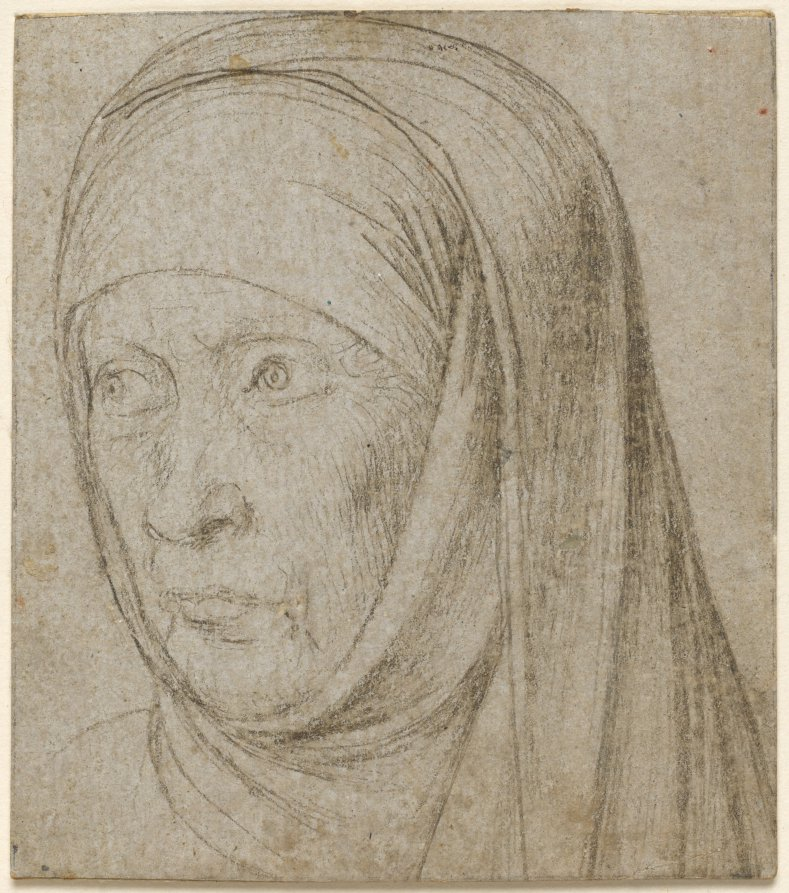

Head of an Old Woman

Hans Holbein (the record gives c. 1465–1524), Head of an Old Woman, c. 1500. Silverpoint on prepared paper, 6.6 × 5.8 cm. Cleveland Museum of Art 1970.14, CC0. Museum’s open-access image, shown here at 789×893 px, about 136 px to the centimeter.
The sheet is about as wide as a playing card. The woman fills it and is cut off by it: the headcloth runs off the top edge and the bottom, and a shoulder line begins at the lower left and stops.
The two eyes are not drawn the same way. The one on the left of the page is a nearly complete circle with a dot in it, set high and to the left; it looks out past the edge of the sheet. The other has an iris drawn as a small spiral, with a lid over it and a long flat stroke under. I enlarged both. The spiral is in the museum’s file at about 30 px across. It looks left too, but less far, so the two don’t agree about where she is looking. I can’t say whether that is a squint, an old face, a hand getting tired, or one eye drawn first and the other drawn after thinking about it.
Most of the sheet’s weight is on the right, in the cloth: long parallel strokes, dark where it falls from her cheek, lighter where it hangs. The face has very few lines for how much it holds. The nostril and the underside of the lower lip are the darkest marks on it. At the corner of the mouth there is one spot, apart from the strokes. I take it for a mark in the paper or the drawing, and cannot tell which from a JPEG.
The record: silverpoint, traces of framing lines in graphite, on paper laid down on a second sheet; the gray ground is prepared, so the line is dark on a toned paper and can’t be erased. Bought 1970. Before that, in the museum’s own words, an unidentified collector (a mark, “possibly Count Sparr”), then a Mrs. E. Zwicky and a J. W. Zwicky, “according to departmental cataloguing sheet”, then a New York dealer. The back of an old mount, since removed, bears the pencil name “W. Hollar”. The record doesn’t say who she was or whether she sat. I did not search further; the museum is the only source I have read. Later the same day I loaded the museum’s own web page for it: same artist line (“Hans Holbein (German, c. 1465–1524)”, no “Elder”), same measurements, and the location reads “Not on view.” The image is online; the sheet itself, as of that page, is in storage.
← a7